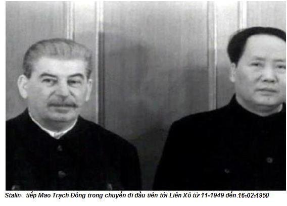
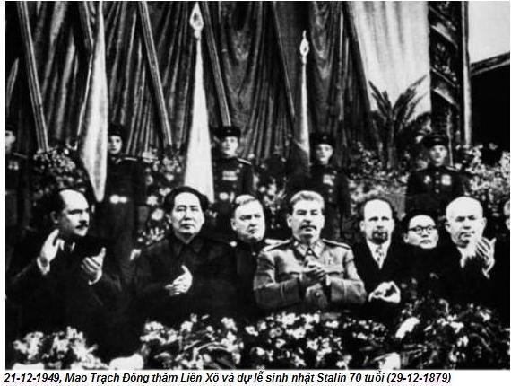
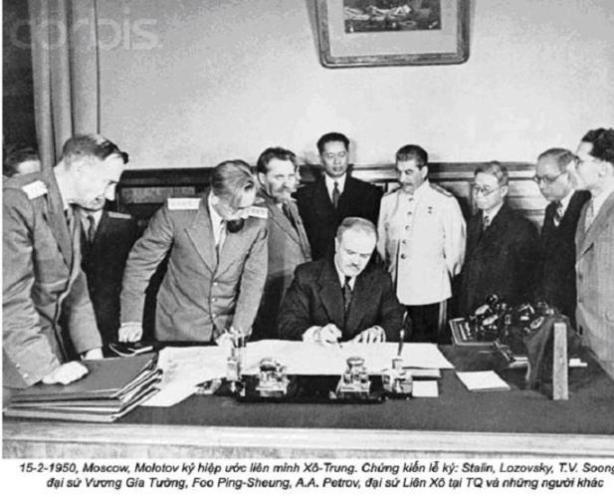

Chương 10

Tôi vốn giữ quan điểm tránh xa chính trị cho nên không quan tâm sự căng thẳng ngày càng tăng giữa Mao và lãnh tụ trong trung ương. Nhưng vào đầu năm 1956, tôi cảm thấy Chủ tịch bất an, day dứt, phiền muộn nào đó về chính trị. Sau này tôi mới biết, năm 1956, thời điểm xảy ra nhiều biến cố, chính năm ấy mầm mống của cuộc Cách mạng văn hoá đã hình thành, gieo mầm sự xáo trộn chính trị to lớn, mà sau này nó đã làm chao đảo cả đất nước suốt một thập kỷ liền.
Bản báo cáo chính trị bí mật của Khrushchev chống Stalin tại Đại hội lần thứ XX của đảng cộng sản Liên Xô vào tháng hai năm 1956 đã đưa đến sự chia rẽ lớn trong nội bộ quốc tế cộng sản.
Mao không tham dự Đại hội đảng ở Moskova. Đoàn đại biểu Trung Quốc do Chu Đức dẫn đầu, người đồng sáng lập Hồng Quân với Mao, vị chỉ huy tối cao đội quân du kích trong chiến tranh. Khi đó, Chu Đức khoảng 70 tuổi, đẹp lão với mái tóc đen dày, có nụ cười hiền hậu. Ông không hề có tham vọng chính trị. Sau giải phóng, ông hầu như đã về hưu, từng giữ những vụ quan trọng: Phó chủ tịch Quốc Vụ Viện, (từ năm 1949 đến năm 1954), Phó chủ tịch nước và phó chủ tịch Hội đồng Quốc phòng nước Cộng hoà nhân dân Trung Hoa (từ năm 1954 đến năm 1959). Những ngày không đi thị sát, không làm việc dưới cơ sở, ông dành thời gian chăm sóc những giò phong lan trong nhà vườn của ông ở Trung Nam Hải, nơi ông trồng tới hơn một nghìn giò lan các loại. Tuy giữ chức phó chủ tịch nước ngồi chơi xơi nước, nhưng chúng tôi thường gọi ông là “Tổng tư lệnh” và ông được nhân dân Trung Quốc kính trọng, vì ông đã góp phần đưa đảng cộng sản lên nắm chính quyền.
Chu Đức không được chuẩn bị trong cuộc công kích Stalin của Khrushchev. Ông điện hỏi Mao về việc đó và xin chỉ thị nên phản ứng như thế nào. Là cựu phó tổng tư lệnh quân đội, ông đề nghị Trung Quốc nên ủng hộ việc chỉ trích của Khrushchev. Mao phẫn nộ:
- Chu Đức đúng là dốt! – giận dữ, Mao thốt lên – Khrushchev và Chu Đức cả hai thật không thể chấp nhận được.
Thêm vào đó, Mao lại có niềm tin huyền bí vào vai trò của người lãnh đạo. Ông không hề băn khoăn khi cho rằng, chỉ có sự lãnh đạo duy nhất của ông mới cứu vãn và thay đổi được đất nước Trung Hoa. Ông chính là Stalin của Trung Quốc, ai cũng biết điều đó. Mao hình dung, ông là đấng Cứu thế của đất nước. Việc Khrushchev chỉ trích Stalin đã buộc Mao phải đề phòng, rồi có lúc quyền lực của ông bị xói mòn và địa vị lãnh đạo của ông gặp trắc trở. Đối với Mao việc tán thành chỉ trích phê phán Stalin chính là phê phán và đe doạ quyền lực cá nhân ông. Sau khi Stalin chết và Khrushchev lên thay vào năm 1953, Mao đã chúc mừng việc bổ nhiệm này. Nhưng khi Stalin bị chỉ trích, Mao trở thành đối thủ không đội trời chung đối với Khrushchev. Dưới con mắt của ông, người lãnh đạo mới của Liên Xô đã phạm một nguyên tắc cơ bản của cách mạng. Đó là nguyên tắc trung quân bất di bất dịch. Mặc dù Khrushchev chịu ơn Stalin về tất cả mọi việc, nhưng ông ta lại chống Stalin.
Hơn nữa, theo Mao, ngoài việc chỉ trích của mình, Khrushchev đã bắt tay với Mỹ, tức là bất tay với tên đế quốc đầu sỏ. Ông tố cáo:
- Ông ta đã trao gươm cho người khác để bầy cọp có thể nuốt chửng chúng ta. Nếu họ không muốn giữ thanh gươm đó, chúng ta sẽ giữ nó. Chúng ta có thể sử dụng nó một cách hữu hiệu. Liên Xô muốn chỉ trích Stalin, nhưng chúng ta sẽ không làm điều đó. Nhưng không chỉ có vậy, chúng ta sẽ kiên định ủng hộ Stalin.
Tôi đã từng ngưỡng mộ Stalin, coi ông là vị lãnh tụ vĩ đại, một vị cứu tinh của Liên Xô cũng giống như Mao của người Trung Hoa. Ấy thế Mao lại không chấp nhận đường lối, chủ trương và không hề ngưỡng mộ Stalin. Sự thật Mao coi thường Stalin. Khi Mao kể cho tôi về thái độ của ông đối với vị lãnh tụ Xô viết quá cố, tôi mới sửng sốt nhận ra rằng, Stalin và ông không bao giờ có thể đồng hành với nhau được. Qua lời kể, tôi thấy rõ sự tức giận của Mao đối với Stalin một cách đầy đủ vào đầu năm 1956. Qua đây tôi mới rõ, Mao thường dối trá cho phù hợp trong ván bài chính trị của ông.
Sự cừu địch của Mao đối với vị lãnh tụ Liên Xô này thật ghê gớm, từ thời kỳ Xô viết Giang Tây, đầu những năm 1930.
Năm 1924, khi đảng cộng sản Trung Quốc mới gần ba tuổi, Quốc tế cộng sản đã chỉ thị cho tổ chức đảng còn non trẻ này hợp tác với Quốc dân đảng thành lập một liên minh chính trị. Vì ở Trung Quốc đang gặp khủng hoảng, phái Quốc gia vừa lật đổ các thế lực phong kiến địa phương cát cứ, cần đoàn kết thống nhất dưới một chính phủ để lãnh đạo đất nước. Một mặt trận thống nhất đã được hình thành. Tuy nhiên, năm 1927, Tưởng Giới Thạch đã dồn hết sức chống lại những người cộng sản vùng ngoại ô, cơ sở chính của đảng làm cho số đảng viên giảm đi mau chóng trong các thành phố. Khi đó, Mao đã trở về quê ông ở Hồ Nam, nơi ông đã chứng kiến những cuộc nôi dậy của nông dân. Theo kinh nghiệm, những cuộc nổi dậy ở Trung Quốc thường xuất phát từ nông thôn. Bởi vậy Mao hiểu rằng, nếu có một cuộc cách mạng xảy ra ở đất nước này trong thế kỷ 20, khởi điểm của nó chính từ nông thôn, nông dân sẽ là lực lượng nòng cốt trong cuộc cách mạng đó. Ông đã đưa ra một chiến lược táo bạo, mặc dù nó không tuân theo học thuyết Marx-Lenin chính thống. Nhưng những điều kiện lịch sử ở Trung Quốc lại diễn ra hoàn toàn ngược lại. Theo diễn giải của Mao, đảng cộng sản sẽ là người lãnh đạo nông dân nổi dậy. Tại những vùng núi hẻo lánh thuộc tỉnh Giang Tây, ông đã xây dựng một căn cứ địa, thực hiện cải cách ruộng đất với sự hỗ trợ của nông dân. Ngoài ra, ông thường đưa du kích tiến hành những cuộc tập kích vào quân Tưởng Giới Thạch, hy vọng sẽ tiêu hao được sinh lực của những người quốc gia, tạo điều kiện cho nông dân chiếm được các đô thị. Dưới sự chỉ huy của Mao, khu Xô viết tỉnh Giang Tây ngày càng được mở rộng.
Năm 1930, Stalin bổ nhiệm Vương Minh, người vừa tốt nghiệp khoá học vài năm ở Liên Xô, mới 25 tuổi, làm đại diện của Quốc tế cộng sản ở Trung Quốc. Theo Mao, mặc dù Vương Minh không muốn giành quyền lãnh đạo đảng cộng sản Trung Quốc, nhưng những việc làm và hành động của Vương Minh chuyển hoạt động cách mạng từ nông thôn vào thành thị, do đó đã đẩy những người cộng sản còn non kém vào những cuộc chiến đấu vô vọng. Ở khu Xô viết, Mao bị coi là bảo thủ và ông bị dồn đến chân tường. Mao kể:
- Stalin gọi tôi là người cộng sản hai mang – đỏ vỏ trắng lòng.
Khu Xô viết Giang Tây thành lập. Tưởng Giới Thạch đem quân bao vây khu căn cứ ở vùng núi, bắt đầu hàng loạt các cuộc tấn công mãnh liệt mà Tưởng gọi là “chiến dịch tảo thanh” và gần như thành công. Chiến dịch tảo thanh thứ năm mang ý nghĩa tiêu diệt đảng cộng sản Trung Quốc đến cùng. Nhưng đảng cộng sản quyết định phá vòng vây, thực hiện một cuộc rút lui nổi tiếng, cuộc Vạn Lý Trường Chinh. Ngay sau cuộc Vạn Lý Trường Chinh này, Mao đã đoạt lại vị trí lãnh đạo của ông.
Mao đã buộc Stalin và Quốc tế cộng sản phải chịu trách nhiệm đối với những khủng hoảng trước đây của đảng. Theo ông, Quốc tế cộng sản đã biến những lối thoát có lợi thành ngõ cụt. Ông nói:
- Khi đó trong những vùng do Quốc dân đảng kiểm soát ở đô thị chúng ta đã bị tiêu diệt 100%, và 90% ở khu Xô viết. Lẽ ra chúng ta phải buộc Stalin hoặc Liên Xô chịu trách nhiệm về thảm hoạ đó, chúng ta lại khiển trách một số đồng chí của mình, vì thứ chủ nghĩa giáo điều mang tính duy ý chí sai lầm của họ.
Không phải Stalin, chính Vương Minh, tín đồ của chính sách Stalin, phải chịu trách nhiệm về tai hoạ này. Thậm chí, Mao cũng đã kết tội ông ta là người “cánh tả phiêu lưu”.
Ngoài ra, Mao còn chỉ trích Stalin, sau chiến tranh thế giới thứ hai ông ta đã quy phục trước sức mạnh của Mỹ và khuyên đảng cộng sản Trung Quốc noi gương các đảng cộng sản Pháp, Ý và Hy Lạp, buông súng đầu hàng chính phủ, tức là đầu hàng Quốc dân đảng. Nhưng Mao đã cự tuyệt. Trong cuộc nội chiến giữa những người Quốc gia và những người cộng sản, Stalin không hề giúp những người cộng sản một khẩu súng hay một viên đạn nào, kể cả “đến cái rắm cũng không”. Chẳng những thế, ông ta lại ép những người cộng sản phải ngừng cuộc hành quân của họ ở phía Bắc sông Dương Tử, để cho Quốc dân đảng kiểm soát toàn bộ miền Nam. Mao nói: “Chúng tôi không thèm đề ý đến lời ông ta”.
Tôi thường nghe, phần lớn vũ khí mà những người cộng sản dùng trong cuộc nội chiến là từ Liên Xô và được để lại khi người Xô Viết rời Mãn Châu sau khi chiến tranh thế giới thứ hai kết thúc. Nhưng Mao lại không muốn xác nhận Liên Xô đã giúp và tôi khó cãi lại ông được.
Khi những người cộng sản chiếm thành phố Nam Kinh – thủ phủ của Quốc dân đảng, Tưởng Giới Thạch phải chạy trốn về Quảng Châu. Mao nói, đại sứ Anh và Hoa Kỳ đã ở lại Nam Kinh để hợp tác với chính phủ mới. Ngược lại, Liên Xô đã ủng hộ Quốc dân đảng và chuyển sứ quán của họ về Quảng Châu. Theo Mao, Stalin không muốn những người cộng sản chiến thắng. Mao nói tiếp:
- Mùa đông năm 1949, chỉ vài tháng sau giải phóng, tôi đi hội đàm ở Liên Xô. Nhưng Stalin không tin tôi. Hai tháng trôi qua vẫn không thấy động tĩnh gì. Cuối cùng, tôi bực quá và nói: “Nếu đồng chí không muốn hội đàm, chúng ta cứ gác việc đó lại và tôi về”.
Nhưng rồi, cuối cùng Hiệp ước hữu nghị, hợp tác và giúp đỡ song phương giữa Liên Xô và Trung Quốc cũng đã được ký.



Cuộc chiến ở Triều Tiên cũng gây ra căng thẳng giữa Mao và Stalin. Tôi thường nghĩ, Liên Xô và Trung Quốc đã hợp tác với nhau trong chiến tranh, thế nhưng Mao lại phủ nhận. Ông nói:
- Khi quân đội Mỹ tiến đến biên giới Trung – Triều tại sông Áp Lục, tôi đã nói với Stalin, chúng tôi sẽ điều quân đến đó. Nhưng Stalin không đồng ý, vì ông ta sợ xảy ra Thế chiến thứ ba.
Mao báo cho Stalin, nếu ông ta không muốn tham chiến nhưng nếu người Mỹ chiếm được Triều Tiên, họ sẽ không chỉ đe doạ Trung Quốc, còn là mối nguy hiểm đối với cả Liên Xô nữa. Môi hở răng lạnh! Cứ muốn đánh nhau, Mao lại phải cần đến vũ khí của Liên Xô. Một khi Liên Xô sợ Mỹ và Anh kết tội ủng hộ Trung Quốc, Trung Quốc buộc phải mua vũ khí của Liên Xô. Trung Quốc sẽ đơn phương chiến đấu và Liên Xô không dính dáng gì đến việc này. Mao quy cho Stalin muốn chia cắt Trung Quốc. Để làm điều đó, Stalin đã cố đưa Cao Cương lên làm một thứ hoàng đế Mãn Châu và thành lập ở đây một đảng cộng sản riêng.
Sự khẳng định của Mao làm tôi ngạc nhiên. Trong công luận tất cả mọi người cho rằng Liên Xô là anh cả của Trung Quốc, là tấm gương cho sự phát triển xã hội chủ nghĩa, quan hệ giữa Liên Xô và Trung Quốc là đồng minh thân thiết. Nhưng theo Mao, thực ra sự tương quan này gần như là mối quan hệ Hoàng Đế và chư hầu. Mao nói: “Họ muốn nuốt chửng chúng ta”. Không bao giờ ông muốn bị thất thế. Lịch sử đã dạy ông, nên ủng hộ những đất nước xa xôi, nên thận trọng đối với những nước láng giềng, đừng có đặt niềm tin vào chủ nghĩa bành trướng Xô viết.
Tuy nhiên, Mao không bao giờ để lộ sự chỉ trích, với tư cách một người lãnh đạo cách mạng, Mao vẫn liên hệ mật thiết với Stalin.
Bản tường trình của Khrushchev cũng làm cho chính sách đối nội của Trung Quốc thay đổi. Việc Chu Đức đề nghị Trung Quốc nên ủng hộ việc chỉ trích Stalin là một sự xúc phạm ghê gớm đối với Mao. Không bao giờ tôi tin Chu Đức lại là mối nguy hiểm đối với Mao và sự bực tức của Mao là vô lý. Nhưng trước đây, Mao và Chu Đức đã từng tranh cãi với nhau khi còn ở Giang Tây và Mao đã quả quyết, nhận định ban đầu của Chu Đức về bản tường trình của Khrushchev đã “phản ánh tư tưởng của ông ta”. Vì vậy ông nghi ngờ sự trung thành của Chu Đức.
Ngày 1-5-1956, hai tháng sau khi bản tường trình của Khrushchev được công bố và cơn giận lôi đình của Mao, Chu Đức lâm bệnh. Thực ra, tình trạng sức khỏe đã không cho phép ông có mặt trên khán đài ở quảng trường Thiên An Môn, nhưng đó lại là một sự kiện chính trị quan trọng, vì các vị lãnh đạo cao cấp của Trung Quốc đều phải có mặt vào ngày hôm đó để chụp một bức ảnh chính thức. Bởi thế, Chu Đức ngại rằng người ta sẽ có ấn tượng nào đấy khi ông vắng mặt trước công chúng. Ông đã nói với Trần Dương Anh, vợ goá của Nhậm Bích Thế:
- Nếu tôi không đến, mọi người sẽ nghĩ tôi đã phạm một sai lầm tồi tệ về chính trị và vì thế buộc phải vắng mặt.
Cuối cùng, khi chụp ảnh, Chu Đức mệt mỏi, mặt tái mét đứng vào chỗ của ông cách không xa Mao chủ tịch.
Mao không bao giờ tha thứ cho Khrushchev vì đã chỉ trích Stalin. Tuy nhiên, vào năm 1956 tôi để ý thấy Mao cũng thường bất bình với ban lãnh đạo đảng của ông như thế nào. Trước hết, lớp người hèn hạ, cứng nhắc, dập khuôn theo mô hình Xô viết đã làm ông không hài lòng.
Ngay năm 1956, Trung Quốc đã dập khuôn theo mô hình của Liên Xô. Một bộ máy quan liêu, cồng kềnh đã được triển khai từ trung ương đến những vùng nông thôn đã ra đời dưới sự điều hành trực tiếp của đảng cộng sản. Công cuộc tập thể hoá nông nghiệp đã hoàn thành, những nhà máy và doanh nghiệp lớn ở các thành phố đều do nhà nước quản lý. Các xí nghiệp tiểu thủ công nghiệp có quy mô nhỏ hơn và các cửa hiệu đã bị quốc hữu hoá hoặc được giao cho chính quyền địa phương quản lý. Sự chuyển biến mang tính xã hội chủ nghĩa gần như đã hoàn chỉnh về kinh tế và hệ thống hành chính quan liêu.
Nhưng sự chuyển biến về tư tưởng, sự hồi sinh sống động của Trung Quốc Mao ao ước thật khó đạt được. Với số lượng cơ quan hành chính dầy đặc, những chiến sĩ cách mạng kỳ cựu đã trở thành những kẻ quan liêu, đối với họ, đặc quyền đặc lợi và địa vị xã hội quan trọng hơn cả tư tưởng cách mạng của Mao. Mao tỏ ra nóng lòng. Ông muốn đẩy mạnh cuộc cách mạng. Nhưng nhưng kẻ quan liêu trong đảng, trong đó có cả những cán bộ lãnh đạo cao cấp, vẫn còn dè dặt và bám lỳ hình mẫu phát triển của Liên Xô. Người ta đã thiết lập những thể chế, cơ cấu tổ chức theo khuôn mẫu của Liên Xô, không lưu tâm đến hoàn cảnh đặc biệt ở Trung Quốc. Do vậy, Mao đã nổi giận với các đồng chí của ông.
Cuộc cách mạng do Mao tiến hành đòi hỏi lòng dũng cảm, sự hăng hái, tinh thần sẵn sàng chiến đấu và Mao cho rằng, những người lãnh đạo của Trung Quốc vẫn còn thiếu những đặc điểm đó. Bởi vì, thậm chí một số người tán thành việc Khrushchev chỉ trích Stalin, nên ông phải dè chừng những thách thức vị trí lãnh đạo của mình. Mao không muốn một thuộc hạ nào của ông noi gương trở thành Khrushchev Trung Hoa lên án ông mãnh liệt sau khi ông qua đời. Cho nên, ông cũng tính đến việc đề phòng có kẻ nào đó âm mưu lật đổ ông khi ông còn sống.
Sự bất bình của ông đối với đảng ngày càng tăng theo năm tháng, nó đã đưa đến cuộc Cách mạng văn hoá đầy thảm hoạ.